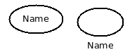
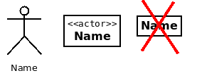
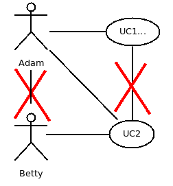
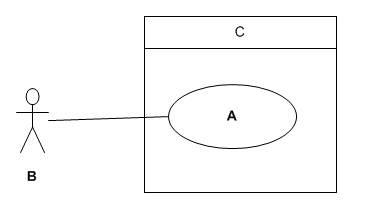

This is an important distinction. Functional requirements
tell us what the software should do and map naturally into
code via use cases.
The non-functional requirements don't map so
easily -- they are often expressed in terms of
How much of some resource can be used.
For example: time to respond, memory needed, cost of CPU,
hours of training, user mistakes per hour,
time to train a new user, time to deliver the software, and so on.
Other non-functional requirements tend to come from above: the HIPA and ADA
requirements for example, or the choice of technology -- "must be Windows".
Security and reliability are high level non-functional requirements. Security
is about things that will not be done rather than what can be done.
Reliability is about how often a system can fail vs be unavailable.
You can spend a lot of money on tools that store requirements. You can also
use pencil and paper. The problem with paper is that
requiremnts change
and it is inefficient to change paper. This is especially true if
you use pen and paper.
So, you need a system that allows these use cases
- Analyst rapidly inputs new requirements.
- Analyst shows impressive requirements to the client.
- Analyst shares requirements with other members of the team.
- Analyst edits requirements.
- Analyst recovers earlier versions. (version control)
- Analyst compares many different artifacts.
- Create new project.
- Backup data.
- Recover data after disaster.
- Etc.
Suggestions: a team web site, Google docs, Drop Box, ...
A hand-held, wireless device that helps shoppers buy the items that they want. A shopper has a list of items that they want. They are sold at different stores. The device keeps an up-to-date list of wanted items as the user shops.
(Main Go Shopping Scenario):
The shopper inputs a list of wanted items and the system displays stores
where they can be found. The shopper goes from store to store looking for
the products that match their list. They buy a product at the first store
where they find it, mark it as bought and the system updates their list or
items and stores.
- Shopper::=a person who wishes to by a number of itwms that might be found in several different stores.
- Shopper::data={id, name, password, ... }.
. . . . . . . . . ( end of section Glossary) <<Contents | End>>
- System will not allow shopper's data to be shared with shops,
other shoppers, or unauthorized employees.
- ...
. . . . . . . . . ( end of section Supplementary Specification) <<Contents | End>>
- R1. Each item is suitable for one product.
- R2. Each wanted item matches various items in different stores.
- R3. Stores have different quantities of each item for sale.
- R4. A product can have a different price at each store.
- ...
. . . . . . . . . ( end of section Domain Rules) <<Contents | End>>
. . . . . . . . . ( end of section Example of a Simple system) <<Contents | End>>
Important fact. A Use Case diagram shows many use cases.
It connects actors to use cases -- period!
A use case is primarily described by text not diagrams.
- *** Learn the notation -- it is unambiguous and simple:
- Bubbles are Use Cases. Name inside or underneath.

- Stick figures are Actors (probably human). Name underneath.
- Boxes with "<<actor>>" are also actors (probably computerized).
- Boxes with no "<<actor>>" are probably mistakes.

- Lines connect Actors to their Use Cases. Lines do not connect use cases to use case
or actors to actor.

- The Big Box shows the system boundary and can have the name of the project
or product on it.
Omitting the system boundary or context. The big box that contains all
the use case bubbles and none of the actors. It is nice if it has the name
of the system at the top.
- Exercise: what are A, B, and C in this image?

- *** Applying the UML: use case diagrams
- * Actors(sticks for people, <<actor>> boxes for systems)
- * Use Case Bubbles (name inside or underneath)
- * Boundary(Scope at top)
- * Actors communicate with Bubbles (no arrows)
- * Layout: primary actors on left, supporting actors on right
An older notation was to give the primary actor an arrowhead at
the use case end.
- Exercise -- Draw a use case diagram for Shopping Aid.
- Applying the UML: Activity diagrams(modernized flowcharts see CSci372)
- Motivation: benefits
- Example: monopoly game
- * Process: iterating
- History
- Resources
- ++ A
Business Use Case
describes how an business actor gets something
that they want but does not describe the systems that are involved.
- + Danger: a "Business case" is the reason the business needs to
develop the software.
- How complete?
- How Thoroughly in inception?
- On the project's website
- Example NextGen
- Supplementary Specification
- Vision
- Glossary
- Business Rules
- **** Process: Evolve Requirements by iteration
- Resources